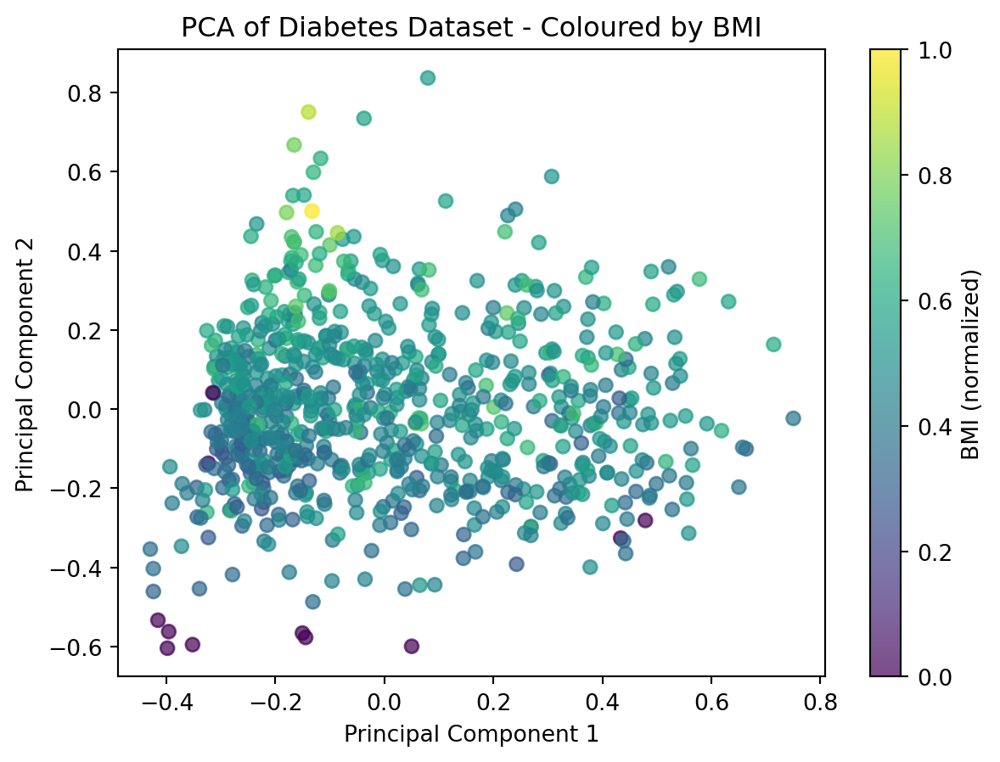
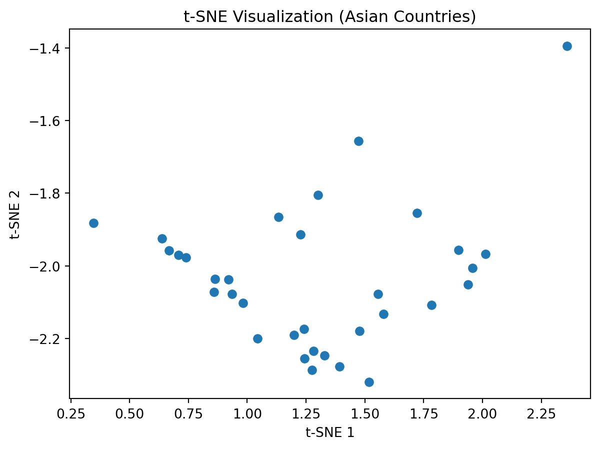

Break up into small groups and work on any one of the following small projects.
None of the projects require any knowledge of biology or any other field.
If you are unsure, pick the first project on electronic healthcare records.
I will be doing a live coding session (code walkthrough).
14.2.1 Project using electronic healthcare records data
ExerciseExercise 1 - Electronic healthcare records data
Level:
For this exercise we will be using some data from hospital electronic healthcare records (EHR). No knowledge of biology/healthcare is required for this.
AnswerAnswer
Project briefing
Here is a brief code snippet to help you load the data and get started.
You have to follow the following steps:
Data Loading and Preprocessing: Loading a diabetes dataset and normalizing numerical features.
Dimensionality Reduction: Applying PCA and t-SNE to reduce the dimensions of the data for visualization and analysis.
Clustering: Performing K-Means clustering on the reduced data to identify potential patient subgroups.
Visualization: Visualizing the data in lower dimensions and the identified clusters to gain insights.
import pandas as pdimport seaborn as snsimport matplotlib.pyplot as pltfrom sklearn.preprocessing import StandardScalerfrom sklearn.preprocessing import MinMaxScalerfrom sklearn.decomposition import PCAfrom sklearn.manifold import TSNEfrom sklearn.cluster import KMeans######################## Load diabetes data #######################url ="https://raw.githubusercontent.com/cambiotraining/ml-unsupervised/refs/heads/main/course_files/data/diabetes_kaggle.csv"df = pd.read_csv(url)####################################### Perform data munging and filtering######################################print(df.head())# Normalize numeric columnsnumeric_cols = df.select_dtypes(include=['float64', 'int64']).columnsscaler = MinMaxScaler()df_normalized = df.copy() # make a copydf_normalized[numeric_cols] = scaler.fit_transform(df[numeric_cols])# ALTERNATIVE CODE (repeat for each numeric column)# Make a copy so the original DataFrame stays unchanged# df_normalized = df.copy()# Create the scaler# scaler = MinMaxScaler()# Select the 'Glucose' column as a DataFrame (double brackets keep 2D shape)# glucose_values = df_normalized[['Glucose']]# Fit the scaler and transform the values# glucose_scaled = scaler.fit_transform(glucose_values)# Put the scaled values back into the copy# df_normalized[['Glucose']] = glucose_scaled# Filter: Glucose > 0.5 and BMI < 0.3 (normalized values)filtered_df = df_normalized[ (df_normalized['Glucose'] >0.5) & (df_normalized['BMI'] <0.3)]print(filtered_df.head())
# Histogramplt.figure()sns.histplot(df_normalized['Glucose'], bins=30)plt.title('Distribution of Normalised Glucose')plt.xlabel('Normalised Glucose')plt.ylabel('Frequency')plt.show()
Now visualize the other variables. Do you notice anything interesting/odd about them? Hint: use sns.histplot() as shown above or plt.hist().
Data visualization is a key step in machine learning. Make sure to spend some time visualizing all the variables/features. Discuss the plots in your group.
Perform PCA
from sklearn.decomposition import PCAimport matplotlib.pyplot as pltimport seaborn as snsimport pandas as pd# Exclude the target column for PCA# We not want to include this because this is something you want to predict.# You can use this column in supervised machine learning.features = df_normalized.drop(columns=['Outcome'])# Apply PCA# This is where you fill in your code .........
Fill in the rest of the code with your group members.
Perform PCA and visualize it. Hint: use plt.scatter() or sns.scatterplot().
Evaluation (how to interpret the PCA plots?)
Reminder: In plt.scatter, the c parameter controls the marker colour (or colours).
The alpha parameter controls the transparency (opacity) of the markers.
When passing numbers, you can specify cmap (colour map) to control the gradient mapping (otherwise the default colourmap is used)
Let us colour by the feature BMI now
# Visualize PCA results colored by BMIplt.figure()scatter = plt.scatter(pca_df['PC1'], pca_df['PC2'], c = df_normalized['BMI'], cmap='viridis', alpha=0.7)plt.colorbar(scatter, label='BMI (normalized)')plt.title('PCA of Diabetes Dataset - Coloured by BMI')plt.xlabel('Principal Component 1')plt.ylabel('Principal Component 2')plt.show()

Do you see any patterns?
Now colour by Pregnancies
Try other features: Glucose, BloodPressure, SkinThickness, Insulin, DiabetesPedigreeFunction, Age
Try spotting any patterns and discuss this in your group.
Recall: The primary goal of unsupervised machine learning is to uncover hidden patterns, structures, and relationships within the data.
This can lead to the generation of new hypotheses about the underlying phenomena, which can then be tested in follow-up studies using statistical methods or through the application of supervised machine learning techniques with labeled data.
Essentially, unsupervised learning helps us explore the data and formulate questions that can be further investigated.
However it is never the end of the data science pipeline. It can lead to further investigations.
Now try tSNE on this data
from sklearn.manifold import TSNEimport matplotlib.pyplot as pltimport seaborn as snsimport pandas as pd# Exclude the target column for t-SNEfeatures = df_normalized.drop(columns=['Outcome'])# Apply t-SNE# This is where you fill in your code .........
Perform tSNE on this data
Vary the perplexity parameter
Now let us colour the tSNE plot by BMI
# Exclude the target column for t-SNE# Already done (so commenting out)# features_for_tsne = df_normalized.drop(columns=['Outcome', 'Cluster'])# Create a DataFrame for the t-SNE resultstsne_df = pd.DataFrame(data=tsne_results, columns=['TSNE1', 'TSNE2'])# Visualize t-SNE colored by BMIplt.figure()scatter = plt.scatter(tsne_df['TSNE1'], tsne_df['TSNE2'], c=df_normalized['BMI'], cmap='viridis', alpha=0.7, s=50)plt.colorbar(scatter, label='BMI (normalized)')plt.title('t-SNE of Diabetes Dataset - Colored by BMI')plt.xlabel('t-SNE Component 1')plt.ylabel('t-SNE Component 2')plt.show()
Now colour the tSNE plot by some other feature. Try Glucose, BloodPressure, SkinThickness, Insulin, DiabetesPedigreeFunction, Age
Do you observe any patterns? Discuss in your group.
Perform hierarchical clustering on this data
import pandas as pdfrom scipy.cluster.hierarchy import linkage, dendrogram, fclusterimport matplotlib.pyplot as pltimport seaborn as sns# Exclude the target column for clusteringfeatures = df_normalized.drop(columns=['Outcome'])# Perform hierarchical clustering# This is where you fill in your code .........
import scanpy as scimport pandas as pdimport numpy as npimport seaborn as snsimport matplotlib.pyplot as pltfrom sklearn.decomposition import PCAfrom sklearn.manifold import TSNE
Load and Preprocess Data: Load the pbmc3k dataset using scanpy, normalizes the total counts per cell to 10,000, and then applies a log transformation.
Then picks out a few “marker” genes (genes that may be important for the disease based on our prior knowledge).
The single cell data is just a table of numbers: the rows are different cells, the columns are genes measured in those cells. Here is what this would look like:
Cell
CD3D
CD4
CD8A
FOXP3
IL2RA
Cell_001
0.5
1.2
0.0
2.1
0.8
Cell_002
1.1
0.3
1.5
0.0
1.9
Cell_003
0.0
2.4
0.7
1.3
0.4
Cell_004
1.8
0.0
2.2
0.9
1.1
Cell_005
0.3
1.7
0.0
1.6
0.2
# 1. Load data and preprocessadata = sc.datasets.pbmc3k()sc.pp.normalize_total(adata, target_sum=1e4)sc.pp.log1p(adata)# 2. Subset to marker genesmarker_genes = ['CD3D','CD3E','CD4','CD8A','CD14','LYZ','MS4A1','GNLY','NKG7']genes = [g for g in marker_genes if g in adata.var_names]expr = pd.DataFrame( adata[:, genes].X.toarray(), index=adata.obs_names, columns=genes)print(expr.head())
We now have a table of numbers: the rows are cells, and columns are genes measured in those cells.
Visualize the data. Use plt.hist() or sns.histplot().
Now perform PCA on this data (Hint: expr.values has all the values. Perform PCA on this.)
Now colour this PCA plot by one marker gene CD3D. The CD3D gene is crucial for immune response. Mutations in this gene can lead to disease. Hint: expr["CD3D"] will get you all the values of the gene. Use that in the c = option in plt.scatter().
Discuss in your group: what do you think the plot means?
Now try the other marker genes: CD3E,CD4,CD8A, CD14, LYZ, MS4A1, GNLY, NKG7
Discuss in your group: what do you think the plot means?
Now perform tSNE on this. Hint: expr.values has all the values. Perform tSNE on this.
Now colour this PCA plot by one marker gene CD3D. Hint: expr["CD3D"] will get you all the values of the gene. Use that in the c = option in plt.scatter().
Discuss in your group: what do you think the plot means?
Now try the other marker genes: CD3E,CD4,CD8A, CD14, LYZ, MS4A1, GNLY, NKG7
Discuss in your group: what do you think the plot means?
Reminder: tSNE is stochastic.
Run tSNE again. Do the clusters remain the same? Can you see the same patterns?
Run tSNE with a different perplexity value. Do the clusters remain the same?
Discuss in your group your key findings. What can you say about these clusters?
Now perform hierarchical clustering on this data.
Try a few distance functions and linkage functions.
Plot heatmaps or clustermaps (Hint: seaborn clustermap does both dendrograms + heatmap in one shot). A representative plot is shown below. Can you try to get a plot similar to this?
Hint: Here is some code to get you started.
HintHint
from scipy.cluster.hierarchy import linkagefrom scipy.spatial.distance import pdistimport matplotlib.pyplot as pltimport seaborn as sns# compute linkagecell_link = linkage( pdist(expr.T, metric="euclidean"), method="ward" )gene_link = linkage( pdist(expr, metric="euclidean"), method="ward" )# seaborn clustermap does both dendrograms + heatmap in one shot# Fill in the code below .......sns.clustermap(.......)
Perform k-means on this data.
Discuss in your group the outcome of this project.
What are your key findings?
Do you think we can find partitions of cells/clusters of cells?
What can you do with these partitions?
HintHint
Work in a group!
14.2.3 Project using GapMinder data
ExerciseExercise 3 - GapMinder data
Level:
For this exercise we will be using sociological data.
AnswerAnswer
Exercise
In this exercise you will explore the Gapminder dataset, focusing on life expectancy, GDP per capita, and population data.
The Gapminder dataset contains global development indicators over time, tracking 142 countries from 1952 to 2007 at 5-year intervals.
Dataset Features
14.2.4 1. country (Categorical)
Type: String/Categorical variable
Description: The name of the country
Example: “Afghanistan”, “Albania”, “Algeria”, etc.
Purpose: Identifies which country each observation belongs to
Unique values: 142 different countries
14.2.5 2. year (Numerical)
Type: Integer
Description: The year of the observation
Range: 1952 to 2007
Interval: Every 5 years (1952, 1957, 1962, 1967, 1972, 1977, 1982, 1987, 1992, 1997, 2002, 2007)
Purpose: Tracks temporal changes in development indicators
14.2.6 3. pop (Numerical)
Type: Float
Description: Total population of the country
Units: Number of people
Range: From thousands to over 1 billion
Example: 8,425,333 people in Afghanistan in 1952
Purpose: Measures country size and demographic changes over time
14.2.7 4. continent (Categorical)
Type: String/Categorical variable
Description: The continent where the country is located
Purpose: Groups countries by geographical region for comparative analysis
14.2.8 5. lifeExp (Numerical)
Type: Float
Description: Life expectancy at birth
Units: Years
Range: Typically 20-85 years
Example: 28.801 years in Afghanistan in 1952
Purpose: Key health indicator measuring average lifespan
14.2.9 6. gdpPercap (Numerical)
Type: Float
Description: Gross Domestic Product per capita
Units: US dollars (adjusted for inflation)
Range: From hundreds to tens of thousands of dollars
Example: $779.45 in Afghanistan in 1952
Purpose: Economic indicator measuring average wealth per person
You will perform the following steps initially:
Data Loading and Setup: The gapminder dataset is loaded, and necessary libraries for data manipulation, visualization, and dimensionality reduction are imported.
Feature Selection: The features lifeExp, gdpPercap, and pop are selected for analysis.
Here is a brief code snippet to help you load the data and get started.
country year pop continent lifeExp gdpPercap
0 Afghanistan 1952 8425333.0 Asia 28.801 779.445314
1 Afghanistan 1957 9240934.0 Asia 30.332 820.853030
2 Afghanistan 1962 10267083.0 Asia 31.997 853.100710
3 Afghanistan 1967 11537966.0 Asia 34.020 836.197138
4 Afghanistan 1972 13079460.0 Asia 36.088 739.981106
Subset to countries in Asia and aggregate
# Aggregate by country: mean of features for each Asian countryfeatures = ['lifeExp', 'gdpPercap']asia_gap_unique = gap[gap['continent'] =='Asia'].groupby('country')[features].mean().reset_index()print(asia_gap_unique.head())
Visualize the features by using plt.hist() or sns.histplot()
Then perform PCA on it. Hint: you need to normalize your data also.
Does your plot look like this?
Is there anything “odd” about this plot? Discuss this in your group.
Now label each point on the PCA biplot this by country names
Hint: The following code will not work (since “country” is categorical). You will have to a bit creative!
plt.figure()plt.scatter(pcs[:,0], pcs[:,1]), c=asia_gap_unique["country"])plt.xlabel("PC1")plt.ylabel("PC2")plt.title("Plot of PCA on Gapminder data for Asian countries")plt.show()
HintHint
Here are some code hints to help you.
plt.figure()plt.scatter(pcs[:,0], pcs[:,1])# add country labelsfor i, country inenumerate( asia_gap_unique["country"] ):# fill in your code here plt.annotate(.....)plt.show()
Your plot may look like this:
What does PC1 mean? Are there any features that are correlated with PC1?
Hint: Perform a scatterplot (plt.scatter()) for each feature vs. PC1
Can we use PCA to approximate the human development index?
Perform tSNE on this data

Do you know notice anything “odd”/“interesting” about this plot?
Change the perplexity parameter and observe what it does to the plot.
Now add the labels of the countries to this tSNE plot. Here is some code to give you a hint.
HintHint
Here are some code hints to help you.
plt.figure()plt.scatter(asia_tsne[:,0], asia_tsne[:,1])# add country labelsfor i, country inenumerate( asia_gap_unique["country"] ):# fill in your code here plt.annotate(.....)plt.show()
Now perform hierarchical clustering on this data.
Discuss the outcomes of your project in your group. Explain your key outcomes (in a few minutes) to everyone in the class.
HintHint
Work in a group!
14.3 Wrap-up
Remember that learning does not stop once you leave class.
Continue practicing your newly learnt skills on new data.
Please take a few minutes to fill out the survey!
14.4 Summary
TipKey Points
Understand real-world scenarios where unsupervised learning is applied
Identify situations where PCA and other dimensionality reduction techniques may not be effective
Practical examples of data that you try unsupervised learning techniques on